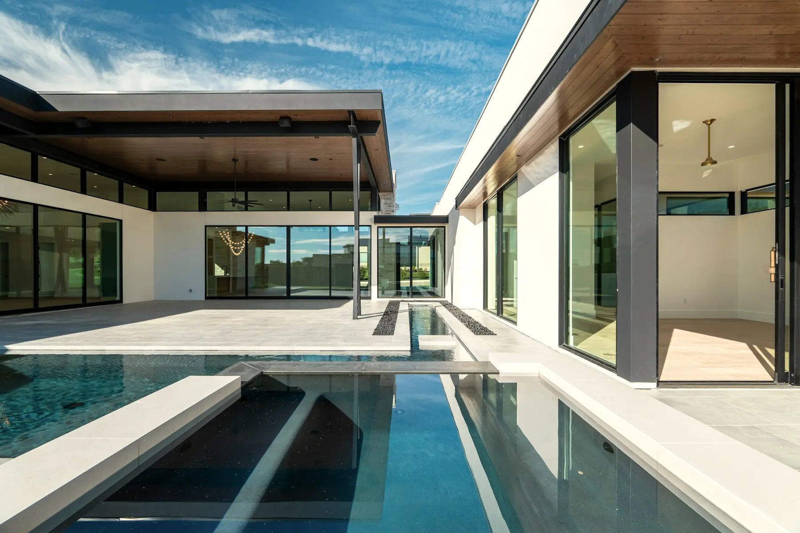

Studio za dizajn i izradu sajtova
Svaki brend ostavlja trag.
Dizajniramo i izrađujemo sajtove koji pomažu firmama da steknu poverenje i pretvore više pravih posetilaca u upite.
Prvi utisak
Vaš sajt progovori
pre nego što to učinite vi.
Slab sajt retko omane glasno. On jednostavno pošalje potencijalne klijente dalje, pre nego što uopšte čujete za njih.
Većina sajtova ne gubi posetioce odjednom. Gube ih kroz sitne prepreke: nejasne usluge, skrivene kontakt podatke, spore mobilne stranice ili nejasan sledeći korak.
Uklanjamo te prepreke kako bi posetioci razumeli čime se bavite, verovali onome što vide i tačno znali kako da vas kontaktiraju.
Pogledajte radove
Cilj
Pretvorite pažnju u stvarne upite.
Jasni putevi do kontaktaPozivi, forme i sledeći koraci se lako pronalaze.
Brz na svakom uređajuRađen za mobilne uređaje od samog početka.
Fiksni obim, fiksna cenaDogovoreno pre početka rada.
Izabrani radovi
Nedavni projekti,
i šta su morali da postignu.
Parfemska kuća, audio brend, studentski investicioni klub i brend satova. Četiri projekta sa četiri različita zadatka — od predstavljanja proizvoda do izgradnje poverenja u mladu organizaciju.


Luxury real estate
For properties that deserve more than a listing.
A separate practice for exceptional homes and the brokerages that represent them. Presentations built around photography and architecture rather than filters and thumbnails.
Including Caliza — one property, presented end to end.

Šta radimo
Sve što je sajtu potrebno,
kroz jedinstven proces.
Strategija, dizajn i razvoj ostaju povezani od prvog razgovora do lansiranja, tako da se prvobitni cilj prenosi kroz svaku odluku.
01
Strategija
Definišemo šta sajt treba da postigne, koga treba da ubedi i šta svaka strana treba da saopšti pre nego što počne dizajn.
02
Veb dizajn
Prilagođen vizuelni sistem izgrađen oko vašeg biznisa, a ne šablon uklopljen naknadno. Rezultat deluje osobeno, bez žrtvovanja jasnoće ili upotrebljivosti.
03
Razvoj
Odobreni dizajn se razvija u brz, responzivan sajt jednostavan za održavanje, koji pouzdano radi na svim veličinama ekrana i modernim pregledačima.
04
Konverzija
Svaka strana posetiocu daje jasan sledeći korak — bilo da je to poziv, slanje upita ili zakazivanje konsultacije.
05
SEO osnove
Naslovi strana, meta podaci, strukturirani podaci, mapa sajta i jasna struktura naslova pomažu pretraživačima da ispravno razumeju i indeksiraju sajt.
06
Analitika i podrška
Analitika se povezuje pre lansiranja, tako da vidite kako ljudi pronalaze i koriste sajt. Nakon lansiranja, po potrebi su dostupne dalje izmene i podrška.
Cene
Jedna fiksna cena,
dogovorena pre početka.
Punu cenu dobijate u pisanoj formi pre početka rada. Bez naplate po satu i bez računa koji raste tokom projekta.
Jedna strana
Landing
€399 JednokratnoTreba vam jedna jaka strana koja predstavlja firmu.
Kompletna jednostrana prezentacija. Radimo na strukturi i redosledu sadržaja — šta ide prvo, šta se izostavlja i čime se posetilac vodi ka kontaktu.
- Prilagođen dizajn jedne strane
- Do šest sekcija
- Rad na strukturi i redosledu sadržaja
- Kontakt forma i jasni pozivi na akciju
- Prilagođeno mobilnim uređajima
- SEO osnove i podešavanje analitike
- Dve runde izmena
- 14 dana podrške nakon lansiranja
Do pet strana
Poslovni sajt
€649 JednokratnoViše usluga i više toga da se ispriča nego što staje na jednu stranu.
Kompletan poslovni sajt sa dovoljno prostora da objasnite usluge, pokažete radove i izgradite poverenje, bez gomilanja svega na jednu stranu.
Sve iz Landinga, plus:
- Do pet prilagođenih strana
- Planiranje strukture sajta i sadržaja
- Sekcija portfolija, galerije ili lokacije
- SEO podešavanje za svaku stranu
- Podešavanje Search Console-a
- Tri runde izmena
- 30 dana podrške nakon lansiranja
Šest i više strana
Signature
Po dogovoru Cena prema obimuSajt koji radi nešto više od predstavljanja.
Veći sajt za firme kojima su potrebne dodatne strane, sadržaj koji se menja, integracije ili funkcionalnosti van standardnog poslovnog sajta.
Sve iz Poslovnog sajta, plus:
- Šest ili više prilagođenih strana
- Sadržaj koji sami menjate — projekti, članci
- Prilagođene forme i interaktivne sekcije
- Integracije za zakazivanje ili sa drugim servisima
- Prošireno podešavanje analitike i SEO-a
- 45 dana podrške nakon lansiranja
Cene uključuju strategiju, dizajn i razvoj u okviru dogovorenog obima projekta.
Naš proces
Jasan proces
od početka do kraja.
Šest koraka. Znaćete šta se dešava u svakom od njih i šta je potrebno od vas pre nego što počne.
-
01
Istraživanje
Učimo kako vaš biznis funkcioniše, šta je klijentima potrebno i šta sajt mora da postigne.
-
02
Definisanje
Mapiramo strane, poruke i put posetioca pre nego što počne vizuelni dizajn.
-
03
Dizajn
Dizajniramo oko stvarnog ili odobrenog sadržaja, a ne generičkog placeholder teksta, kako biste tačno mogli da procenite konačan doživljaj.
-
04
Razvoj
Odobreni dizajn pretvaramo u brz, responzivan sajt i testiramo ga tokom čitave izrade.
-
05
Doterivanje
Testiramo sajt na stvarnim uređajima, rešavamo granične slučajeve i doterujemo detalje koji utiču na svakodnevno korišćenje.
-
06
Lansiranje
Obavljamo finalne provere, povezujemo analitiku i alate za pretragu, a zatim pripremamo sajt za nesmetanu predaju.
Zašto Deerzign
Mali studio.
Puna pažnja.
Deerzign je mali nezavisni studio, tako da direktno sarađujete sa osobom koja dizajnira i izrađuje vaš sajt, od prvog razgovora do lansiranja. Nema account menadžera, nepotrebnih predaja niti slojeva odobravanja.
U svakom trenutku radimo na malom broju projekata. Tako komunikacija ostaje brza, odluke jasne, a svaki sajt pažljivo osmišljen.
Svaki projekat počinje od vašeg biznisa, a ne od reciklirane verzije prethodnog sajta koji smo napravili.
Bez account menadžera. Bez predaja.
Jasnoća pre ukrasa
Ako nešto stranu čini lepšom, ali težom za razumevanje, uklanjamo to.
Po meri, podrazumevano
Svaki projekat počinje od vašeg biznisa, a ne od prethodnog sajta koji smo napravili.
Građen da traje
Sajt treba da ispravno radi i za dve godine, bez potrebe za ponovnom izradom.
Imate projekat na umu?
Sajt treba
sam sebe da isplati.
Sajt treba da vaš biznis učini razumljivijim, pouzdanijim i dostupnijim za kontakt — pretvarajući više pravih posetilaca u stvarne prilike.
Pokrenite projekat
Recite nam nešto o svom biznisu, ciljevima i vrsti sajta koji vam je potreban.